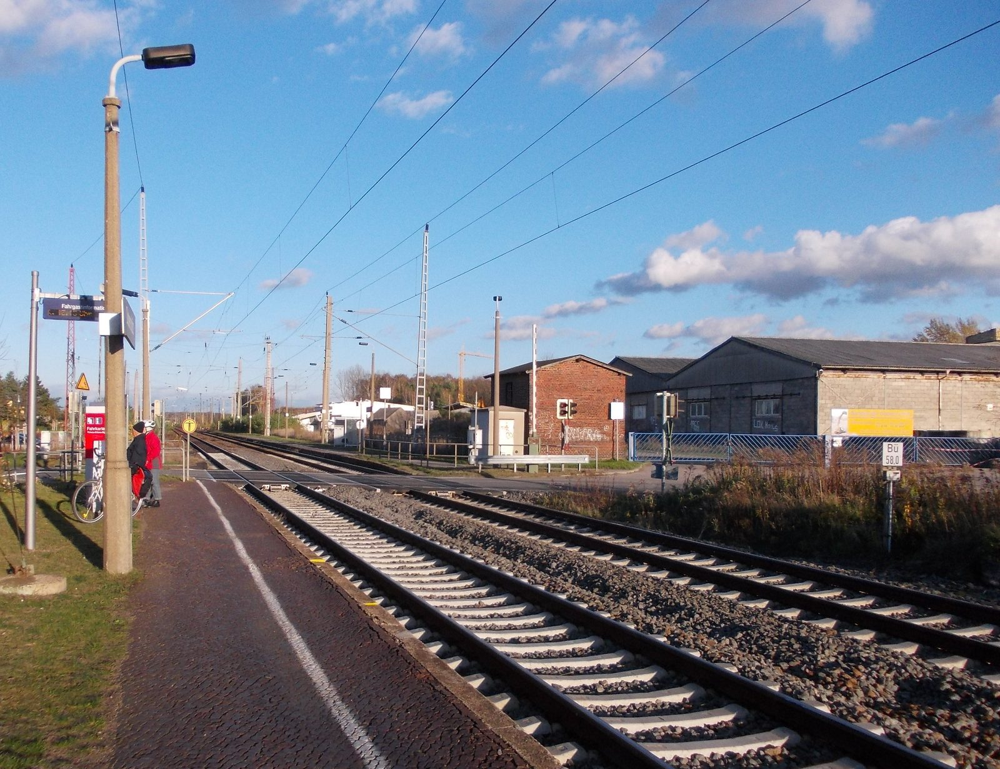

Breite Straße 17
Rathaus
Eine Verwaltung für sechs Ortschaften. Wer wofür zuständig ist, steht weiter unten mit Durchwahl und E-Mail.
Öffnungszeiten und Kontakt
Montag 9–12 Uhr · Dienstag 9–12 und 13–17:30 Uhr · Donnerstag 9–12 und 13–15 Uhr
| Montag | 9:00 – 12:00 Uhr |
|---|---|
| Dienstag | 9:00 – 12:00 Uhr 13:00 – 17:30 Uhr |
| Mittwoch | geschlossen |
| Donnerstag | 9:00 – 12:00 Uhr 13:00 – 15:00 Uhr |
| Freitag | geschlossen |
Außerhalb der Öffnungszeiten sind Termine nach vorheriger telefonischer Absprache möglich: 034244 5400. Feiertage sind in der Statusanzeige nicht berücksichtigt.
- Anschrift Gemeindeverwaltung Doberschütz
Breite Straße 17
04838 Doberschütz - Telefon 034244 5400
- E-Mail info@doberschuetz.de
- Fax 034244 50344

Haltepunkt Doberschütz. Die Linie S4 der S-Bahn Mitteldeutschland hält hier. Vom Bahnsteig zum Rathaus sind es wenige Minuten zu Fuß.
An der Spitze
Bürgermeister
Andreas Mählmann ist Bürgermeister der Gemeinde Doberschütz. Er wurde 2025 mit 59,6 Prozent der Stimmen gewählt.
- Telefon 034244 54011
- E-Mail andreas.maehlmann@doberschuetz.de
Zu einer festen Sprechstunde des Bürgermeisters liegt keine veröffentlichte Angabe vor. Termine lassen sich über das Sekretariat vereinbaren.
Wer macht was
Ansprechpartner in der Verwaltung
Alle Durchwahlen beginnen mit 034244 54. Wenn Sie nicht wissen, wer zuständig ist: 034244 5400 wählen, das Sekretariat verbindet.
Hauptamt
-
Anja Behr Hauptamtsleiterin
034244 54018 anja.behr@doberschuetz.de -
Janine Juckeland Sekretariat
034244 54010 janine.juckeland@doberschuetz.de -
Susann Damisch Personalamt, Kindertagesstätten
034244 54024 susann.damisch@doberschuetz.de
Bauamt
-
Daniela Gräßler Bauamtsleiterin
034244 54013 0160 91230536 daniela.graessler@doberschuetz.de -
Birgit Brandt Bauplanung, Baurecht, Bauvorhaben
034244 54017 birgit.brandt@doberschuetz.de -
Henry Pohlenz Kaufverträge, Liegenschaften, verkehrsrechtliche Anordnungen
034244 54014 henry.pohlenz@doberschuetz.de -
Nicole Pertzsch Beitragsrecht, Kaufverträge, Liegenschaften
034244 54015 nicole.pertzsch@doberschuetz.de
Einwohnermelde-, Pass-, Gewerbe- und Ordnungsamt
-
Heike Peterson Pass- und Gewerbeamt, Einwohnermeldeamt, Ordnungsamt
034244 54016 heike.peterson@doberschuetz.de
Kämmerei
-
Rainer Klewe und Susanne Böhme Kämmerer, stellvertretende Leiterin Finanzen
034244 54012 rainer.klewe@doberschuetz.de -
Ina Glatte Grundsteuer, Gewerbesteuer, Hundesteuer
034244 54022 ina.glatte@doberschuetz.de -
Katja Engelhardt Kassenverwalterin
034244 54025 katja.engelhardt@doberschuetz.de -
Virginia Kath Kasse, Vollstreckung
034244 54020 virginia.kath@doberschuetz.de -
Annett Mählmann Anlagenbuchhaltung, Feuerwehrwesen
034244 54019 annett.maehlmann@doberschuetz.de
Bürgerpolizist
Polizeihauptmeister Thomas Hanitzsch ist für die Gemeinde zuständig. Er gehört nicht zur Gemeindeverwaltung, sondern zur Polizei Sachsen.
03423 664222 · 0173 9618866 · thomas.hanitzsch@polizei.sachsen.de
Hinkommen
Anfahrt
Breite Straße 17, 04838 Doberschütz. Doberschütz liegt rund zehn Kilometer östlich von Eilenburg.
Mit der Bahn
Der Haltepunkt Doberschütz liegt an der Bahnstrecke Halle–Cottbus und wird von der Linie S4 der S-Bahn Mitteldeutschland bedient.
Mit dem Auto
Die Bundesstraße 87 führt durch die Gemeinde. Sie verbindet Eilenburg im Westen mit Torgau im Osten.
Zu Stellplätzen am Rathaus und zu den Buslinien liegen keine veröffentlichten Angaben vor; sie sind in diesem Entwurf deshalb weggelassen.